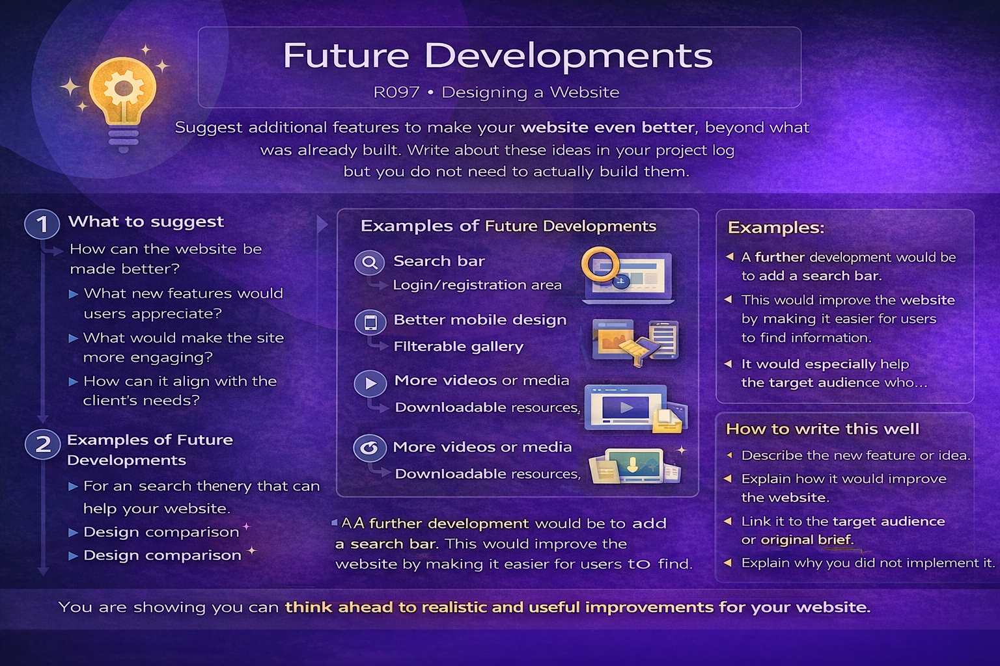

Task 3B(iii) Further development
Explain how your website could be developed further.
Further features
Scalability
Maintenance
Finish with a priority:
Pick the top 2 developments and justify why those should come first.
Further Development of the IDMP (Your Website)
After you have improved your website, you must suggest further developments. These are ideas you did not have time to implement but would make the website even better in the future. This is written in your project log and does not require you to actually build the features.
What “further development” means
- New features that would enhance user experience.
- Extra interactive elements that were not included.
- Design improvements if more time was available.
- Ways to make the website more accessible or responsive.
- Additional content that would benefit the target audience.
- Technical upgrades that improve performance or usability.
Examples of realistic developments
- Add a search bar to quickly find content.
- Create a login area for personalised content.
- Add animations or transitions for smoother navigation.
- Embed more videos or interactive media.
- Improve mobile layout with a hamburger menu.
- Add a contact form with validation and confirmation.
- Introduce a filterable gallery or resource list.
- Provide downloadable resources for users.
How to write this in your project log
- Clearly describe the new feature or improvement.
- Explain how it would improve the website.
- Link it to the target audience and the original brief.
- Explain why it was not implemented (time, complexity, skill level).
Top tip
These ideas must be realistic and relevant to your website. Avoid vague statements like “make it better” — be specific about what would be added and why.